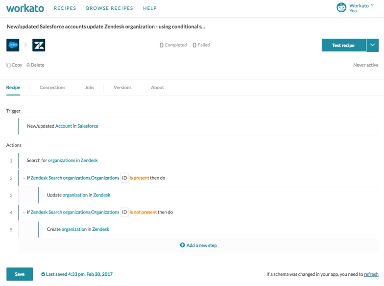
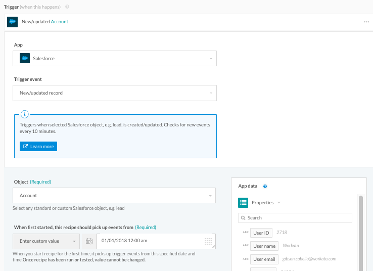
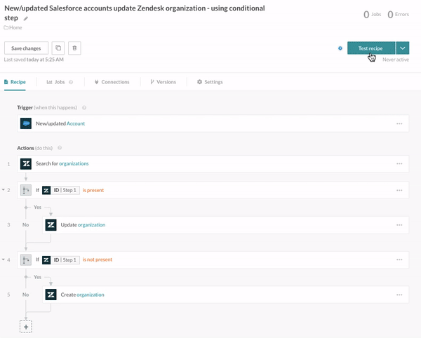
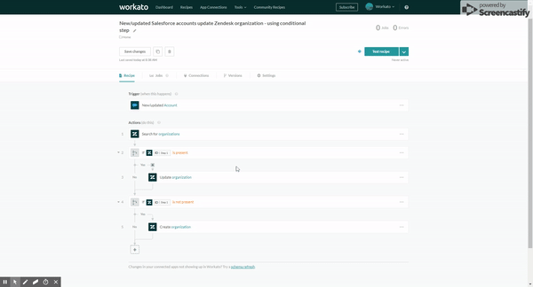
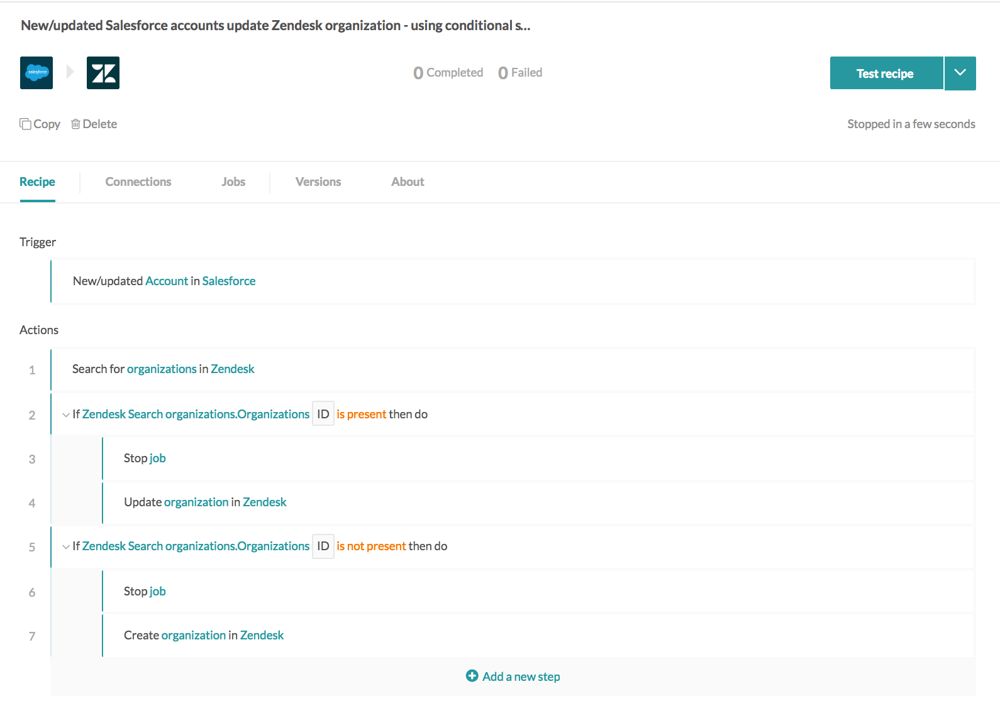
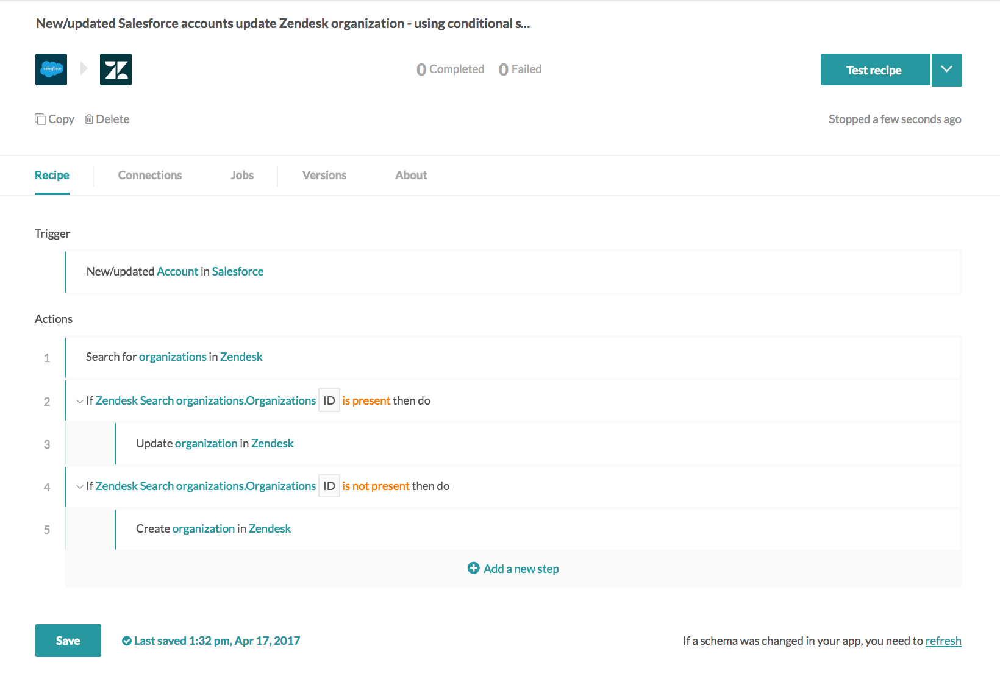
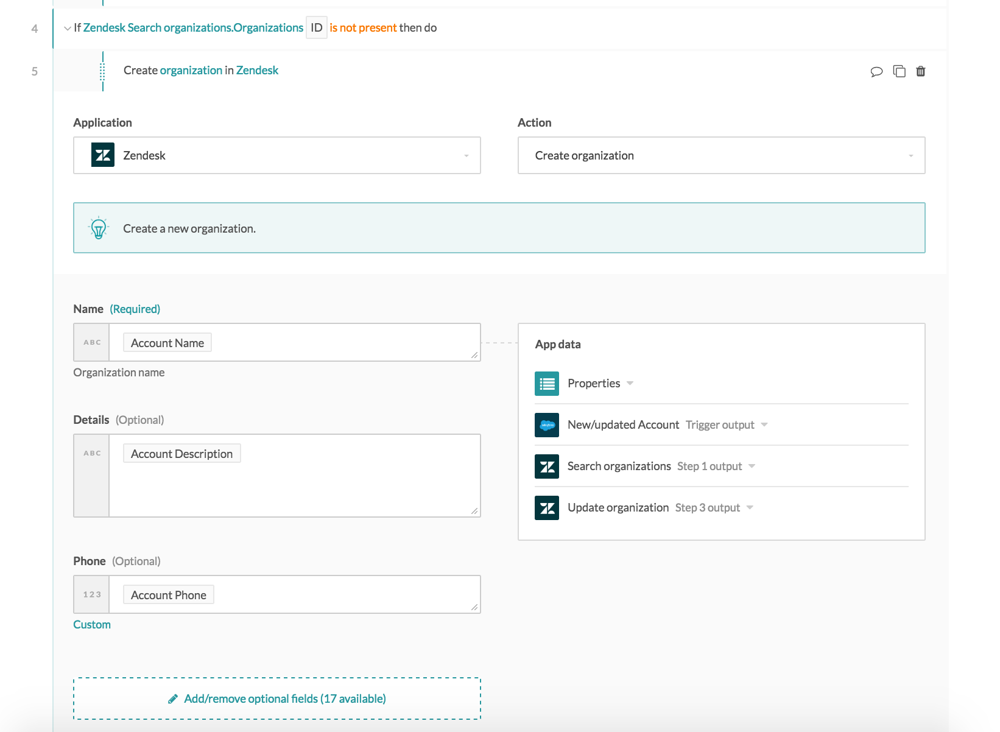
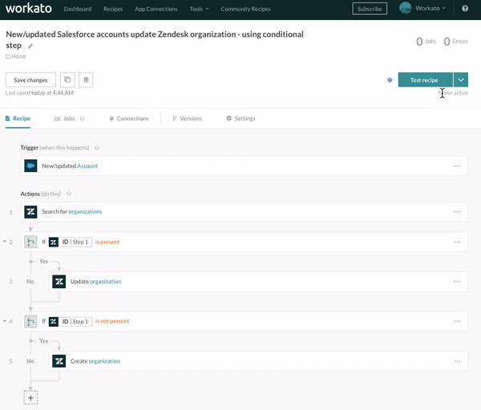
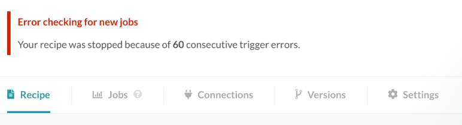

Test, start and stop recipe
In Workato, you can work with recipes in various ways:
- test a recipe to run a single trigger event through the recipe logic
- start a recipe to have it pick up trigger events
- stop a recipe to have it stop processing new trigger events
Test mode
It is best practice to test your recipe before starting it and letting it run with minimal supervision. You don't want to turn on an inaccurate automation that moves and processes data wrong - that probably requires a lot of cleanup!
The test recipe button picks up a single trigger event and runs it through your recipe to create a job. This lets you review the job details to check for recipe correctness.
 Test button showing up on default for a recipe with no successful jobs
Test trigger events
The trigger event picked up when you click on test depends on the Since/From date selected. In the following example, clicking on test will have the recipe look for Salesforce accounts created or updated after 1 January 2017, midnight. If the recipe test mode finds Salesfoce accounts matching that criteria, it proceeds to processes the first trigger event in the queue. As trigger events are processed in chronological order, the account created or updated earliest (closest to 1 January 2017, midnight) will be processed.
 Recipe test mode looks for Salesforce accounts created or updated after 1 January 2017, midnight, and processes the earliest trigger event in the list of accounts found matching this criteria
Remember, the Since/From date cannot be changed once you have tested/started the recipe!
If the test mode did not find any jobs, it returns the following message.
 Test mode did not find a new or updated account in Salesforce (trigger event), and hence created no jobs
In our example, it means that there are no Salesforce accounts created or updated after 1 January 2017, midnight. In this case, there are a couple of things we can do:
Create or update a Salesforce account to create a trigger event, then click on test again. The recipe should pick up this trigger event as it fits the criteria of an account that has been created or updated since 1 January 2017, midnight.
Make a copy of the recipe, and change the since date to an earlier date where you know there will be trigger events. For example, if I know that I have a Salesforce account created on 31 December 2016, 10.30pm, I can set the copied recipe's since date to earlier than 31 December 2017, 10.30pm, to guarantee that I have at least 1 trigger event to pick up.
If the test mode found trigger events, it picks up and processes the first trigger event. As trigger events are processed in chronological order, the earliest event will be processed. If you click on test again, it will process the next trigger event in chronological order, and so on.
 Test mode found a new or updated account in Salesforce (trigger event) and created a job
Testing tips
Use sandboxes
As best practice, try to use sandboxes instead of production accounts for testing recipes. This ensures that you're using realistic data but not working with production, possibly mission-critical data.
Add Stop steps to prevent unwanted actions from happening
Add a Stop step to the recipe when testing to prevent the recipe from carrying out steps that you're not interested in testing. For example, if you simply wish to test your conditional actions and verify that data is being carried out with the correct steps, you can add stop steps to prevent the recipe from actually carrying out any actions within the conditional step.
 Recipe with additional stop steps in steps 3 and 6 to test conditional actions
Test all possible scenarios
Recipes often come with multiple lines of conditional logic. In the following example, the recipe will either create a Zendesk organization, or update an existing Zendesk organization.
 Recipe with conditional steps that syncs Salesfore accounts and Zendesk organizations
To test this recipe, we suggest testing with a couple of trigger events that will test out both paths, e.g. with a Salesforce account that has a corresponding Zendesk organization, and with a Salesforce account that doesn't.
Test all mapped data fields and pills
To ensure data is being transformed (if applicable) and moved from one app to the other correctly, test all data being moved. For example, in the following recipe, we're moving Account Name, Account Description and Account Phone from Salesforce into Zendesk. During testing, best practice is to ensure that these three data fields in Salesforce has data, and then verify that these input fields in Zendesk (Name, Details and Phone) has the right data moved from Salesforce.
 Mapped input fields
Start recipe
Starting a recipe will cause it to pick up trigger events and process them through the recipe. When a recipe is started, it becomes active.
Starting a recipe for the first time
When a recipe is first started, it will fetch trigger events from the Since/From datetime defined. Subsequently, it will continuously process these events. If you had defined the Since/From date during testing previously, this date cannot be changed again for this recipe - you can find out more here.
If you had tested your recipe in test mode before starting, the recipe will not reprocess any trigger events previously picked up during testing. This prevents duplication of data in your apps. You should only start your recipe when you've fully tested it - check out the section on testing recipes if not.
If you have any successful jobs, the start button should be displayed by default. Otherwise, it can be found in the dropdown list.
 Start button showing up on default for a recipe with at least 1 successful job
Starting a recipe for the second time onwards
For most Workato recipes, when a recipe is started after it has been stopped previously, it will continue where it was stopped. For example, if it was stopped on Monday, and started again from Thursday, the recipe will fetch all trigger events since Monday and process them.
However, this might not be the case for recipes with real-time triggers powered by webhooks - trigger events that occur during the time that the recipe was stopped might not be picked up by the recipe. You can read more about real-time triggers and webhooks here.
Stop recipe
Stopping a recipe makes it inactive. It will stop picking up trigger events. Recipes have to be stopped to make changes to the recipe, or to rename the recipe.
Most Workato recipes will continue where they have left off when a recipe is restarted from a stopped state. This depends on the trigger it has. For most Workato triggers, the recipe will continue to process jobs from when it stopped - for example, if it was stopped on Monday, and started again from Thursday, the recipe will fetch all trigger events since Monday and process them.
However, this might not be the case for recipes with real-time triggers powered by webhooks - trigger events that occur during the time that the recipe was stopped might not be picked up by the recipe. You can read more about real-time triggers and webhooks here.
Recipes stopped by Workato
Some recipes are stopped by Workato. In such cases, you will receive an email from us about this stopped recipe. There are 2 reasons for this:
Recipes are automatically stopped when the monthly transaction limit is hit. Contact our customer success team to add more transactions.
The recipe has experienced 60 consecutive errors when trying to fetch trigger events. This can be due to various causes, e.g. password change leading to disconnected connection, API server of the app was down, etc. You have to fix the underlying issue before the recipe will work.
 Error message shown in the recipe when there has been 60 consecutive trigger errors
Notifications email
When a recipe is stopped by Workato, an email is sent to the login email associated with the Workato account. This email can be changed, and additional recipients can also be added to be notified via the Notifications email setup in your account settings.
 Configure the emails to notify in account settings
Configure the emails to notify in account settings